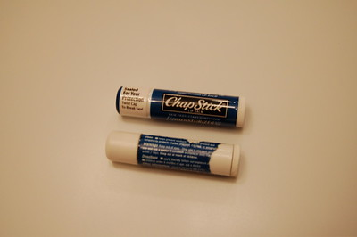

Losing a Partner
There comes a point at which I need to admit defeat. Now is that moment. Tears of sorrow well up in my eyes and I am saddened by this deep and impacting loss. It's never easy to part with such a long-time friend, or partner. I'm uneasy about welcoming a new partner into my life. My previous relationship was fairly intimate. It's not every day that you brush your lips across a non-spouse... but it is for me. I remember the special moment when part of their covering caught on something and tore, revealing a little more than I felt I should have. Seeing that smooth, white, tender surface underneath was... magical. From that moment on, our relationship was never the same. Each day it seemed to get deeper and deeper, until finally... it could go no further.

I'll miss you ChapStick, but it's gotten to the point where I have to distort my face in order to apply you to my lips. On a happy note, however, I'm thrilled to have made it through an entire stick without losing it, and pat myself awkwardly on the back as I type this with the other hand.
- Prior: The Neighbor's Door
- Next: By Last Name Only